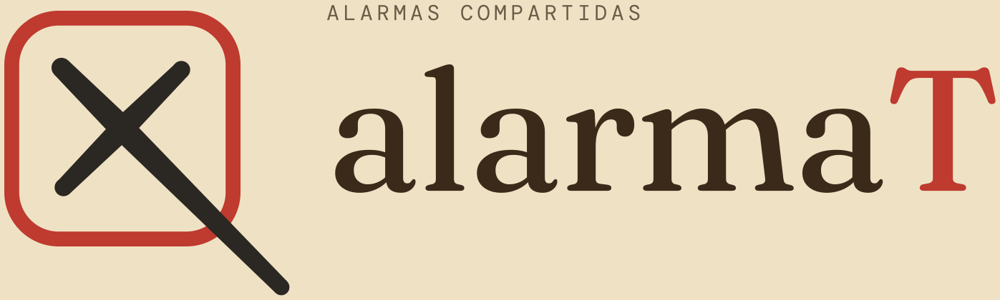
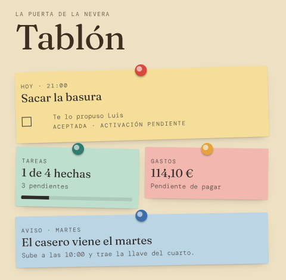
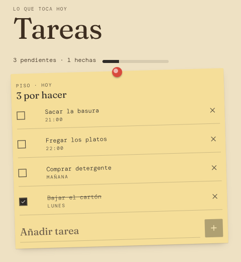
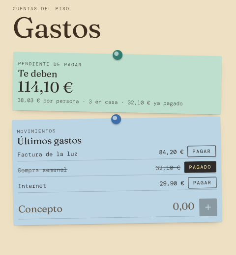
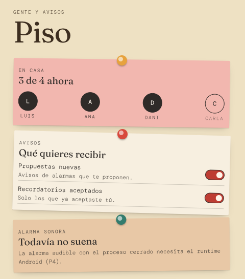

MENSAJE
Una propuesta no es una alarma
Escribir «baja la basura» no programa nada ni confirma que se haya leído.
HACKATHON ETSE · CLOSEDAI · 22 OCT 2026

No más «¿hiciste aquello?»
LA IDEA EN UNA FRASE
«¿Te pongo una alarma?»
Con alarmaT sabes si la ha aceptado, si la ha cambiado y si suena.
EL PROBLEMA
MENSAJE
Escribir «baja la basura» no programa nada ni confirma que se haya leído.
CONTROL
Que otra persona active un aviso en tu móvil no es consentimiento.
REALIDAD
Aceptación, permisos y programación local son hechos distintos.
En un piso de 2 a 6 personas, el aviso vive en tres sitios distintos: el chat, la cabeza de cada uno y el móvil de quien lo pidió.
LA IDEA
El servidor avisa. El móvil suena. La persona decide.
Sin activación unilateral y sin prometer lo que Android no permite: nada de sonar con el teléfono apagado o tras un force-stop.
ESQUELETO NAVEGABLE · RAMA P1-ESQUELETO




ESQUELETO INTERACTIVO
CON QUÉ ESTÁ HECHO
También: better-sqlite3, Argon2id, expo-sqlite, expo-font y GitHub Actions. Logos de Simple Icons (CC0).
SIN HUMO
YA FUNCIONA · CON EVIDENCIA
PENDIENTE · SIN MAQUILLAJE
No presentamos una notificación como alarma ni una migración documental como backend operativo.
GRACIAS
Ahora la pregunta tiene respuesta: quién la propone, quién decide y si suena.
REPOSITORIO
github.com/Carolechu65/HackatonETSE-ClosedAI
Rama P1-Esqueleto · presentación en presentation/
← → para navegar · N notas del ponente · F pantalla completa